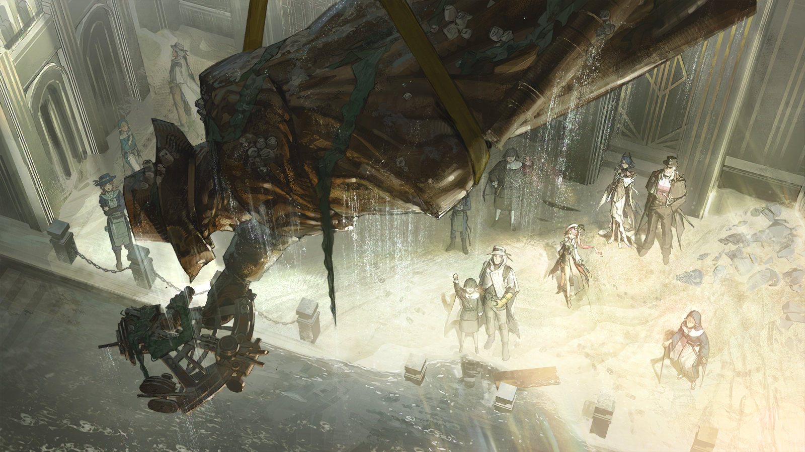

今天有一艘船出航♪
越过灯塔，越过教堂♪
潮湿的水汽吹向海岸♪
“扬帆”，舵不在风的手上♪
今天有一艘船出航♪
水手的爱人从不为分别流泪♪
她知道我会带回珍珠、金铁♪
用不尽的酒和糖♪
今天有一艘船出航♪
羽兽在船舷上踱步——♪
空等一场吧。吹响号角，收紧鳞网♪
我们捞起太阳♪

悦耳的女声
今天有一艘船出航♪
悦耳的女声
它无名无号，只有一名年轻的船长♪

悦耳的女声
他能——♪

悦耳的女声
呃，他能……
稳重的男声
他能在狂风中指出方向♪
稳重的男声
称他伊比利亚，靠岸之处都是家乡♪
悦耳的女声
哎呀，这句老是记不熟。瓦列里奥，你都提醒我多少次了？

瓦列里奥
六次了，特菲。
瓦列里奥
不怪你，这首船歌在伊比利亚被封禁了六十多年，重新学起来不容易，你的发音比以前好了很多。
特菲
“好了很多”可不够。曾经，下到南部偏僻村落的捕鳞人，上到伊比利亚王室海军舰队的船长，都会哼唱这段旋律。
特菲
成群结队的黄金舰船从我们的港都——雷亚-伊比利亚出航时，岸边的礁石都被民众的歌声震动。

瓦列里奥
可惜，六十三年前的大静谧夺走了一切……

特菲
以港都为首的几十座城市相继沉没，黄金时代的大多数事物，连同出海一起，都成了禁忌，人们除了务农和诵经，别的什么都不敢想。
特菲
但现在我们要去的地方，跟伊比利亚的其他任何一处都不一样。

特菲
它是黄金时代、航海精神的象征，是我披上这身海军军装以后最向往的地方，也是最适合唱我练习的这首船歌的地方——

瓦列里奥
前提是我们进得去。审判庭早在三个月前就开始审查谁能成为城区的住民，我们没有迁居的资格。
瓦列里奥
你向拥护者骗来……募捐来的路费已经花完了。现在我们只剩我手上这个箱子。
特菲
嗯，时间差不多了，快，把箱子里的乐器拿给我！

游行的男性
（欢快的演奏声）

特菲
大海庇佑伊比利亚，我的朋友！
游行的男性
大、大海庇佑？我只听祖母用过这种说法……

特菲
沉没六十三年的雷亚-伊比利亚能回归难道不是因为大海的庇佑吗？而且，今天可是港都中心城区打捞工程正式启动的日子呀！
游行的男性
当然！我们从北方一路游行过来，正打算去外围城区的广场为仪式演奏。

特菲
等的就是你们！
游行的男性
啊？
特菲
我是说——你们演奏的《伊比利亚的老水手》等的就是我这个小号手！
游行的男性
耳朵倒是不错，这首曲子可比你年长得多。来，加入我们吧，今天会是伊比利亚不同凡响的一天！
特菲
没错！
特菲
瓦列里奥，你一会儿混在队伍里一起进入港都外围城区，保准没问题。
瓦列里奥
……
特菲
哎呀，我知道你不喜欢我耍这些小心思，也知道你担心我，没事的。

瓦列里奥
特菲……

特菲
欸欸欸，一会儿进外围城区可就不能叫我的真名了，万一露馅了可就骗不着拥护者，也赚不到钱了呀！
特菲
记住，现在我不是在各个捕鳞村里流浪的小特菲——
特菲
我的名号，是失落的贵族、伊比利亚王室海军的后裔——埃斯特菲尼娅·科隆·德·托莱多！

年轻的惩戒军
请出示你的身份证明和入城文书。
年轻的惩戒军
走吧。
年轻的惩戒军
你好，开一下箱子。
年轻的惩戒军
嗯，没有问题。
年轻的惩戒军
那边的女士，仪式期间不能在街道上佩带武器，你……

慵懒的惩戒军
把头抬起来。就凭你的表现，想靠做最基础的巡逻工作立功，只能祈祷每个可疑分子都把自己的罪名缝在裤腰上。
慵懒的惩戒军
快告诉我，你不是真的在做这样的梦吧，南多？

南多
德鲁莎教官，我只是太专注了才没认出您……
德鲁莎
专注？专注于巡逻还是数数？
德鲁莎
每经过五个人你就会拦住最后一个，规律得愚蠢。如果我是犯罪分子，广场早就爆炸了。

南多
您别奚落我了，巡逻组的工作不就得按照审判庭的规矩来吗？

德鲁莎
严格来说，加入审判庭的阿戈尔人只有那个告假回乡的书记，我是个自由的编外人士。
南多
那也不是谁都能像您一样无视流程，还能当那么多年的教官的……
德鲁莎
你说什么？

南多
咳……
南多
喂！等等，那个游行乐队里的女孩，我好像没在报备名单里见过你，请出示身份证明。
特菲
我、我怎么了？您是不喜欢听小号吗？游行乐队可不能晚到，我们要在盛大的启动仪式上献曲啊。

南多
眼神飘忽，过度亢奋，而且你拿小号的动作——
德鲁莎
唉，行了行了，放她走吧。
特菲
多谢长官！
南多
德鲁莎教官！
德鲁莎
往后看，她领头的这支乐队可把整条通向广场的街道都堵死了，前来观礼的人越来越多，你打算怎么处理？
南多
检查完他们只需要十几分钟，以前我们——
德鲁莎
打住，士兵。
德鲁莎
告诉我，我们现在站在哪里？
南多
站在哪里？我们站在港都外围城区。
南多
几个月前，按照与我们建立合作的那位阿戈尔执政官的计划，它先行被打捞上岸，布设了灯塔供能系统和打捞中心城区的大型起重机。
南多
今天的打捞启动仪式也是对供能系统和打捞技术进行的一次测试，工人们将从被海水淹没的中心城区中打捞起那座最宏伟的国王雕像。
南多
两周后，中心城区本体也会被打捞起来，到那时，我们所站的地方将变成真正的、完整的雷亚-伊比利亚。

德鲁莎
答得不错，不过你说的是行政区划的改变，我想要提醒你的是这片城区和伊比利亚其他地区的不同之处。
南多
不同之处？
德鲁莎
这里的许多设施和作业场所依海而建，虽然人们还不能以欣赏的姿态看向大海，但也不再畏惧在临海的地方生活。
德鲁莎
灯塔、打捞中心、造船厂……处处能见到岛民的身影，不会再有惩戒军和审判官随意盘查岛民。
德鲁莎
去教堂的人没有减少，但比起忏悔，越来越多的人开始分享自己对未来的设想，对雷亚-伊比利亚——这座黄金时代的都城的设想。
德鲁莎
一个月前，有关黄金时代和大海的种种还是铭刻在经典中的罪孽，而现在，圣徒阁下重新阐释的经文里已经没有了这些内容。
德鲁莎
这说明什么？

南多
这些我都听说了，但我也听到过有人因此开始质疑圣徒阁下的判断，我不能草率地发表意见。

德鲁莎
……
南多
但我明白您的意思，教官。我们确实站在伊比利亚变革的路口，只不过我曾在加入审判庭时宣誓，我必须坚守在自己的岗位上。
德鲁莎
唉，行啦。广场内有好几个审判官，还有几百个比你更有经验的惩戒军，他们可不是吃干饭的，要是被误会成越权可就麻烦了。
德鲁莎
再说了，就算你信不过他们，难道还信不过现在对整个伊比利亚至关重要的那两位长官？
南多
最后的圣徒卡门阁下，还有提出打捞计划的克莱门莎女士……他们已经到了仪式现场？
德鲁莎
没人比他们更在乎即将启动的打捞工程以及这场仪式了，放心吧。

叫卖的小贩
陈酿的海藻酒——有人要陈酿的海藻酒吗——
？？？
陈酿的海藻酒？
叫卖的小贩
您有所不知啊，这可是我家代代流传下来的酿造手艺，陪我家先祖度过了大静谧之后最难熬的日子，很有纪念价值。
？？？
今天这样的日子，不酿些新酒吗？
叫卖的小贩
唉，跟您说实话吧，这些酒都是我申请到迁居资格之后从家乡带过来的，就是怕这个地方还不如我以前待的破镇子。
叫卖的小贩
谁知道这儿真的是个好地方，好得都快让我以为自己踏出伊比利亚的地界了……咳，这话不能乱说。
叫卖的小贩
我也想酿新酒啊，只是这些陈酿也总得有人喝吧？
？？？
说得对。给我来一杯吧。
叫卖的小贩
谢谢您。

克莱门莎
哈哈，按照你的说法，岛民和我这样“海里来的阿戈尔人”倒像是两种完全不同的人了。
叫卖的小贩
这……这……我不是这个意思，执政官阁下！

克莱门莎
唔，我以为我只是开了一个玩笑？看来伊比利亚跟阿戈尔的笑点似乎不太一样……

克莱门莎
语言模块，记录对话情境，分析差异——抱歉，这位朋友，我虽然学习了伊比利亚语，但还有些不太熟练。
叫卖的小贩
没、没关系。

克莱门莎
唉……
？？？
你确实和你的那几个猎人同伴不太一样。

克莱门莎
他们肩负的使命比我承担的责任要重得多。
克莱门莎
如果他们有机会在伊比利亚生活，而非执行剿灭海嗣的任务，我想他们也不会是那副咄咄逼人的样子。
克莱门莎
只不过，要是如此，建立海陆联合防线的成果，可就不足以让我们开展打捞计划了，伊比利亚阁下。

圣徒卡门
几个月前的深夜，阿戈尔的无人机出现在审判庭中枢的窗外，照亮了我在古旧海图上做出的标记——雷亚-伊比利亚。
克莱门莎
我想，这个巧合正说明我们在谈判前就已经达成了共识。
克莱门莎
正如上一次伊比利亚人与阿戈尔人通力合作，建设我们脚下的这座水陆两栖城市时那样。
圣徒卡门
我对阿戈尔人的态度也不会与那时不同。
克莱门莎
您还是在怀疑阿戈尔帮助伊比利亚打捞港都的真实目的，是吗？

圣徒卡门
“让囿于大地的人们，重新得到一座通向世界的港口”，不过是一种刻板而暗藏危险的外交辞令。
圣徒卡门
无论你是那个例外，还是你对这次合作过分上心——我都清楚阿戈尔对他们散落在陆上的同胞尚不关心，更别说对伊比利亚这个国家……
圣徒卡门
克莱门莎执政官，我记得你的履历。在担任弥利亚留姆的执政官前，你曾担任过军团长。
克莱门莎
是的。
圣徒卡门
那告诉我，你现在仍是一名无条件忠于阿戈尔的军人吗？

克莱门莎
……
克莱门莎
之后的两周，我只会是打捞中心的新监事，只会是岛民的同胞。
克莱门莎
港都回归不仅仅对伊比利亚民众有意义，对于我的同胞们同样如此。或者说，其实这才是您这么快批准打捞计划的原因。

圣徒卡门
嗯？
克莱门莎
想必，您应该不会因为我接下来的三两句话，就取消筹备了这么久的打捞计划。
克莱门莎
大静谧对于伊比利亚的打击是摧毁性的，审判庭为了伊比利亚的存续做出了很多努力，有些令人赞叹，有些则是严苛——甚至血腥的。
克莱门莎
如今，雷亚-伊比利亚即将回归，外围城区的一系列行政规划完全革新，伊比利亚会在猛烈的海风中重新站起身，但很多问题仍待解决。
克莱门莎
经典可以被重新阐释但不能被完全颠覆，要消除伊比利亚人对海洋的恐惧，就需要先消除伊比利亚人对岛民根深蒂固的恐惧。
克莱门莎
不过，哪怕审判庭放宽了对岛民的限制，哪怕雷亚-伊比利亚是一座拥有全新规则的城市，这个问题对于审判庭而言仍然棘手。
克莱门莎
但如果能有人从外交层面，给予审判庭一些“压力”，那就暂时不会再度激化伊比利亚人和岛民的矛盾，比如——
克莱门莎
故意让阿戈尔介入岛民问题。
圣徒卡门
你我都清楚，对于绝大多数阿戈尔人而言，你说的这些都称不上外交困境。名义上，你来到伊比利亚只有一个目的——实现打捞计划。
克莱门莎
是的，伊比利亚阁下，不过……
克莱门莎
唔，伊比利亚海藻酒的味道与阿戈尔的其实没有什么两样。在酿新酒之前，总得有人喝下那些陈酿。
克莱门莎
合作愉快。
游行的男性
唉，真是乱套，谁能想到海边会聚集这么多伊比利亚人，弄得乐队都被挤散了。
游行的男性
仪式马上就要开始了，我们的小号手……她怎么跑到前面去了啊！
瓦列里奥
抱歉先生，她总是这样说不听……
特菲
让一让，让一让，请让乐队的小号手，哦不，是指挥家站到观摩雕像的最前列，这样我才能有足够的激情和灵感！
特菲
（小声）记住雕像的每个细节，想好故事要怎么编圆。
特菲
（小声）你是王室海军的后裔德·托莱多，是来这里重建王室海军舰队的，你需要足够多的资金——
特菲
哎哟，别挤我啊！
叫卖的小贩
海藻酒——陈酿海藻酒——

特菲
（小声）要是大家拿不出来怎么办？说不定这儿的日子也没那么好过呢？
特菲
（小声）那就用以前的方法，只要确保我和瓦列里奥的食宿就行，德·托莱多大人可比审判庭来得仁慈！
特菲
（小声）这话在这儿是不是骗不到人了，我刚刚还看到两个惩戒军在笑呢，比盘问的时候还吓人……

特菲
哎，都说了别挤我，我可是——
特菲
怎么突然安静了，大家都在……抬头看什么？

泛着陈旧色泽的雕像遮住了太阳，轮廓微微发亮。
大海随着雕像的升起发出声响，如同巨浪扑打礁石，木船沉入峡湾。
特菲走过伊比利亚的很多地方，今天听到的与以往听到的没有任何不同。
但我的心为何如此雀跃？她怔怔地想。
三个月前，她在瓦列里奥嘴里听到“雷亚-伊比利亚”这个名字的时候，她脑袋里只有流浪汉们讲的那些故事。
哪怕她为了骗取饭食和寝宿，装作贵族对黄金时代侃侃而谈，但她心里仍旧觉得港都不过是一座被泡烂了的城市，并不稀奇。
如今，她站在几千名伊比利亚民众中间，与他们一起抬头，看着国王的雕像悬吊在被他丢弃的国土之上。
她似乎看到了大海。
年轻的费尔南多·亚历杭德罗一世站在甲板上，眯起眼睛，将以阿戈尔技术为基底制造的六分仪对准太阳。
她似乎听到了歌声。
百年前，工匠为甲板上的国王定制雕像，但做模特耗时太长，国王的思绪已经飘向远方。他哼起伊比利亚人耳熟能详的船歌。
于是，她也哼起那首自己练习过无数遍的、失落的船歌——
特菲
今天有一艘船出航♪
特菲
越过灯塔，越过教堂……♪
特菲
欸，都愣着干什么呀，军鼓呢，短号呢？百年前的雕像应当配百年前的歌呀，乐队听我指挥！
黎博利女孩的歌声与乐队演奏一同响起。
年长的老人下意识地跟着哼唱，六十余年的岁月让他们忘记了大部分歌词，曲调也破碎不堪。
手中没有乐器的青年跺着脚，驻守的惩戒军用武器敲击石阶，打节拍的声响盖过远处的海浪。
人们仍在学习陌生的船歌，适应如何在白天歌唱，但他们心中涌起了与港都一同沉没多年的情绪——
今天有一艘船出航♪
羽兽在船舷上踱步——♪
空等一场吧。吹响号角，收紧鳞网♪
我们捞起太阳♪

躁动的教徒
无鳞之人，六十余年的岁月尚不能剔除你们的无知和傲慢……
躁动的教徒
妄图夺回献给海神的礼物，该死，该死……
寡言的教徒
那边巡逻的那个阿戈尔人，我不想称她为同胞。
躁动的教徒
很快就不用了。让她渴死在贫瘠的大地上吧。准备好了吗？
寡言的教徒
嗯。
躁动的教徒
等等，你的声音……

躁动的教徒
呃！
潜伏的惩戒军
最近深海教徒的行动越来越少，你们竟敢在没有同伙帮忙的情况下为非作歹？
潜伏的惩戒军
带走。
驻守的惩戒军
是。
潜伏的惩戒军
长官，幸亏您从之前被关在地牢里的岛民那里问出了线索，这才阻止了他们的阴谋。

？？？
这件事或许没那么容易结束。
潜伏的惩戒军
真的不需要我和其他惩戒军士兵来帮您吗？
潜伏的惩戒军
您身上的伤还没有好，还是应该多休息……
？？？
我愿意带你们来港都外围城区，不是想要一批对我效忠的士兵，而是想让你们远离战场，也别再干那些审讯的工作。
？？？
圣徒阁下重新诠释经典，还对在外围城区居住的岛民放宽了限制，这是个明确的信号。
？？？
哪怕与海嗣的战争我们还未胜利，伊比利亚也很快会迎来全新的时代——我们将与岛民和谐共处，不必再仇恨彼此，也不必刀刃相向。
？？？
去广场上喝杯海藻酒，跟你们的朋友和家人唱首歌、跳支舞吧。
潜伏的惩戒军
那……这几个异教徒之后怎么处理？
？？？
我来审。

惩戒军士官
你们看到的可疑人影确实是蓄意破坏仪式的深海教徒。

南多
那我是不是能参与后续审讯了？
惩戒军士官
之后的事就不需要巡逻组担心了，我们会处理。

南多
凭什么——
惩戒军士官
德鲁莎教官，烦请你看好这名士兵，只要完成巡逻工作就好，不要轻举妄动。
德鲁莎
明白，明白。
南多
……
南多
“轻举妄动”？我跟刚刚押人的惩戒军是同期，我们受过的训练完全一致！
德鲁莎
我知道，第一次见恐鱼的时候，你比他少尖叫一声。
南多
德鲁莎教官，您在审判庭训练所任教十年，现在惩戒军队伍里的大部分新人都是您的学生。

南多
可现在您只能跟我分到一组，做最基础的巡逻工作，您难道不会觉得……
德鲁莎
巡逻怎么了，逮捕同胞难道是令人愉快的事？
南多
我不是这个意思……
德鲁莎
差点忘了。水里那个技术工，可以把头抬起来了，惩戒军走了。

技术工
呼……呼……
德鲁莎
不好意思啊，把你按进水里的时候有点急，手没伤着吧？
技术工
您按住的那只手本来也是义肢，没感觉的。

德鲁莎
那就好，那就好——不，我是说太遗憾了……
技术工
刚才谢谢您，长官。没有其他事要询问的话，我就先去处理打捞雕像的收尾工作了。
南多
您对他这么粗暴，他还谢谢您？
德鲁莎
一个岛民在逮捕深海教徒的现场附近，哪怕他是打捞中心的技术工，也一定会受到盘问。
南多
但您之前也说了，审判庭在港都外围城区的行事风格跟一贯的很不一样，讯问中……嗯……不太合情理的部分，都会被规避。
德鲁莎
可他们要如何确认自己会经历一场“得体”的讯问呢？进地牢亲自体验吗？
南多
这……
德鲁莎
我一直盯着水底的动静，他全程没有参与任何深海教徒的行动。
德鲁莎
我的身份不适合为岛民做担保，所以只能帮他省点事，以防这件事成为压垮他的最后一根稻草——我见过很多这样的例子。
南多
可您几个小时之前还在说雷亚-伊比利亚是不同的……

德鲁莎
是啊。
德鲁莎
但现在，这半截残缺的城区还不是真正的雷亚-伊比利亚，不是吗？
技术工
……
作为打捞中心的一名技术工，他仔细地排演过。
完成启动仪式的雕像打捞工作之后要从广场北面的入水口离开，那样才能绕开人来人往的主干道，避免麻烦，尽快回到打捞中心。
多谢那位长官。虽然不知道以她的身份是怎么加入审判庭的，但在那里的生活恐怕不会比普通的岛民轻松。
他拧干头发和衣物，披上防水外套，换上陆行靴，右手抓握了三下，确认假肢内的电路没有受到海水的影响。
锈蚀从假肢关节处向外蔓延，令他隐隐作痛，没有药物和工具箱的时候，他依靠意志抵御这种疼痛。
他需要治疗，但不是今天。
技术工
气象球没有报警，悬浮稳定……
技术工
尽管遇到了一些小插曲，但奶奶，按你的说法，今天是个适宜工作的好日子。

技术工
海风吹在身上还是有些冷，我会习惯的。